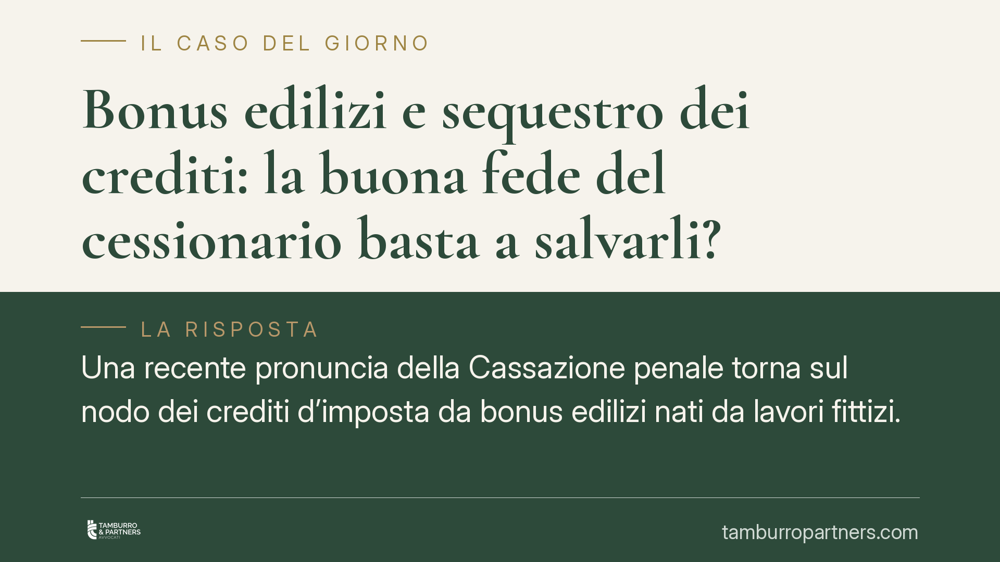

Bonus edilizi e sequestro dei crediti: la buona fede del cessionario basta a salvarli?
Una recente pronuncia della Cassazione penale torna sul nodo dei crediti d'imposta da bonus edilizi nati da lavori fittizi. La questione: quei crediti sono sequestrabili anche presso chi li ha acquistati senza colpa? Il punto rileva per banche, intermediari e imprese, perché separa il piano cautelare penale da quello della responsabilità e del risarcimento.

Il caso e la cautela sui crediti d'imposta
Il tema è noto a chi opera con i bonus edilizi: crediti d'imposta generati da lavori mai eseguiti, o gonfiati, che poi circolano tramite cessione fino ad arrivare nel portafoglio di banche e intermediari finanziari. La domanda ricorrente riguarda la sorte di quei crediti quando la frase originaria viene scoperta: possono essere bloccati anche in capo a chi li ha comprati in buona fede?
Secondo quanto riportato da alcune fonti di stampa specializzata, la Terza Sezione penale della Cassazione si sarebbe espressa in senso affermativo. Trattandosi di una pronuncia la cui esatta identificazione (numero, anno e sezione) non è al momento verificabile con certezza sulle banche dati ufficiali, richiamiamo qui l'impostazione giuridica generale della materia, già consolidata in precedenti arresti, senza attribuire a una singola sentenza affermazioni che non siano verificabili.
Inquadramento normativo
Il sequestro preventivo è disciplinato dall'art. 321 del codice di procedura penale, che conosce due forme distinte.
Il sequestro impeditivo (art. 321, comma 1, c.p.p.) mira a bloccare una cosa la cui libera disponibilità può aggravare o protrarre le conseguenze del reato, o agevolare la commissione di altri reati. Non ha funzione sanzionatoria: serve a neutralizzare la pericolosità oggettiva del bene. In questa logica, il credito d'imposta nato da una frode è lo strumento attraverso cui il profitto illecito può materializzarsi (tramite la compensazione fiscale). Ne consegue che, ai fini cautelari, ciò che rileva è il collegamento oggettivo tra il credito e il reato, non lo stato soggettivo di chi lo detiene.
Il sequestro a fini di confisca (art. 321, comma 2, c.p.p.) ha invece una proiezione diversa: anticipa la futura ablazione del prezzo o del profitto del reato (anche per equivalente). Qui la posizione del terzo estraneo e di buona fede assume un peso maggiore, perché la confisca non può normalmente pregiudicare il terzo in buona fede titolare di un diritto reale.
La distinzione non è teorica: un conto è bloccare temporaneamente il credito per impedirne l'uso, altro è destinarlo definitivamente allo Stato. La buona fede del cessionario può incidere sul secondo piano, ma non è di per sé sufficiente a evitare il primo.
Sul versante sostanziale, la cessione dei crediti è regolata dall'art. 121 del D.L. 34/2020 (conv. L. 77/2020). I profili legati alla ripartizione temporale e alla rateizzazione dell'utilizzo dei crediti sono stati oggetto di successivi interventi normativi (tra cui il D.L. 4/2022, conv. L. 25/2022, e il D.L. 11/2023, conv. L. 38/2023). La misura e i termini di utilizzo residui vanno verificati in concreto, poiché la disciplina è stata modificata più volte.
Implicazioni pratiche
Per la banca o l'intermediario che ha acquistato i crediti, l'assenza di colpa non è uno scudo automatico contro il sequestro impeditivo. Il bene può essere congelato finché permane la sua idoneità a produrre l'effetto illecito.
Questo non significa che il cessionario estraneo alla frode resti privo di tutele. Cessata la misura cautelare, e accertata la sua estraneità, il soggetto può in linea di principio tornare a utilizzare i crediti legittimamente acquisiti, nei termini consentiti dalla normativa vigente al momento. Resta inoltre impregiudicata la possibilità di agire sul piano civile verso chi ha generato o trasferito crediti viziati.
È dunque essenziale tenere separati due piani: quello cautelare penale, dove conta il nesso oggettivo con il reato, e quello della responsabilità e del risarcimento, dove la buona fede e la diligenza conservano pieno rilievo.
Cosa fare in concreto
- Verifica a monte la filiera del credito: ricostruisci titolo originario, soggetto che ha eseguito i lavori e passaggi di cessione, conservando la documentazione.
- Documenta la diligenza: per banche e intermediari, formalizza le procedure di due diligence antifrode; la tracciabilità dei controlli è determinante sul piano della buona fede.
- Distingui i due profili: se arriva un provvedimento di sequestro, fai valutare subito se si tratta di misura impeditiva (comma 1) o prodromica a confisca (comma 2), perché cambiano gli strumenti di difesa.
- Attiva il riesame nei termini: contro il decreto di sequestro è esperibile la richiesta di riesame; i termini sono brevi e perentori.
- Monitora i termini di utilizzo: per committenti e imprese, verifica periodicamente le scadenze e le modalità di fruizione residua dei crediti alla luce delle modifiche normative successive al D.L. 34/2020.
In una materia soggetta a revisioni continue e a un contenzioso penale in evoluzione, l'analisi preventiva del profilo di rischio associato a ciascun credito conserva un valore concreto, al di là della singola emergenza giudiziaria.
Ogni condominio ha una storia a sé.
Se gestisci un'amministrazione e vuoi un confronto su una specifica questione condominiale, scrivi allo studio. Ti rispondiamo entro un giorno lavorativo.